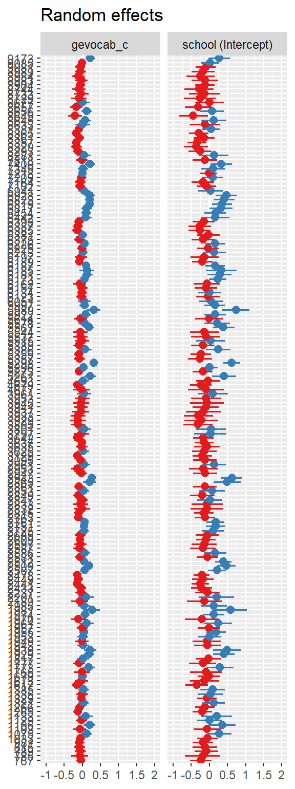
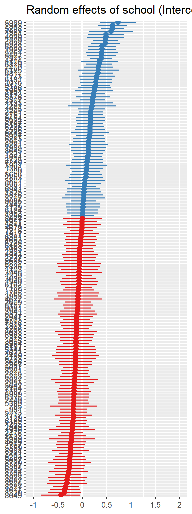
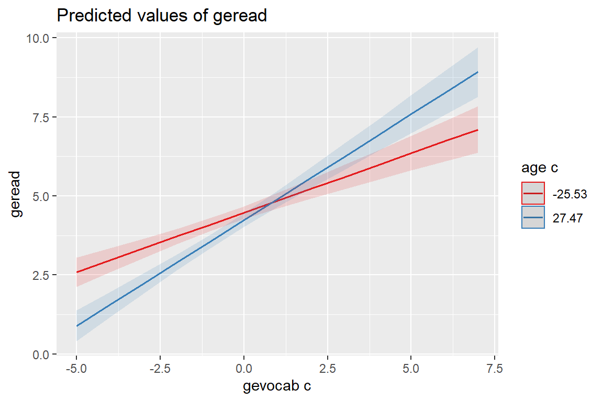

7 sjPlot Package

Daniel Lüdecke is German researcher that has put together several GREAT packages, including sjPlot which we will detail here. Documentation can be found at: http://www.strengejacke.de/sjPlot/index.html
library(tidyverse) # all things tidy
library(texreg) # Convert Regression Output to LaTeX or HTML Tables
library(lme4) # Linear, generalized linear, & nonlinear mixed modelsts models
library(haven) # read in SPSS dataset
library(sjPlot) # Quick predicitive and diagnostic plots Read the SPSS data in with the haven package and prepare it (see previous chapter).
data_raw <- haven::read_sav("http://www.mlminr.com/data-sets/Achieve.sav?attredirects=0")
data_achieve_center_scale <- data_raw %>%
dplyr::mutate_at(vars(id, region, corp, school, class), factor) %>%
dplyr::mutate(gender = gender %>%
factor(labels = c("Female", "Male"))) %>%
dplyr::mutate(classize = classize %>%
factor(labels = c("12-17", "18-21",
"22-26", ">26"))) %>%
dplyr::select(id, region, corp, school, class, # Identifiers
gender, age, geread, gevocab, # Pupil-level vars
classize, # Class-Level vars
senroll, ses) %>% # School-level vars
dplyr::mutate(gevocab_c = gevocab - 4.4938) %>%
dplyr::mutate(age_c = age - 107.5290) %>%
dplyr::mutate(senroll_c = senroll - 533.4148) %>%
dplyr::mutate(senroll_ch = senroll_c / 100) %>% # centered AND divided by one hundred
dplyr::mutate(ses_t = ses / 10) # JUST divide by tenFit the final model (see previous chapter)
fit_read_11re_s <- lme4::lmer(geread ~ gevocab_c*age_c + gevocab_c*ses_t + # 2 2-way interactions
(gevocab_c | school),
data = data_achieve_center_scale,
REML = TRUE)# Knit to Website: texreg::htmlreg()
# Knit to PDF: texreg::texreg()
# View on Screen: texreg::screenreg()
texreg::htmlreg(list(fit_read_11re_s),
custom.model.names = c("Final"),
caption = "MLM: Final Model",
caption.above = TRUE,
single.row = TRUE)| Final | |
|---|---|
| (Intercept) | 3.94 (0.11)*** |
| gevocab_c | 0.67 (0.05)*** |
| age_c | -0.00 (0.00) |
| ses_t | 0.06 (0.01)*** |
| gevocab_c:age_c | 0.01 (0.00)** |
| gevocab_c:ses_t | -0.02 (0.01)** |
| AIC | 42976.51 |
| BIC | 43048.93 |
| Log Likelihood | -21478.26 |
| Num. obs. | 10320 |
| Num. groups: school | 160 |
| Var: school (Intercept) | 0.08 |
| Var: school gevocab_c | 0.02 |
| Cov: school (Intercept) gevocab_c | 0.03 |
| Var: Residual | 3.66 |
| p < 0.001; p < 0.01; p < 0.05 | |
Now we will show some of the things the sjPlot package can do!
7.1 Plotting Coefficients
Select terms that should be plotted. All other term are removed from the output.
Note that the term names must match the names of the model’s coefficients. For factors, this means that the variable name is suffixed with the related factor level, and each category counts as one term. E.g. rm.terms = "t_name [2,3]" would remove the terms t_name2 and t_name3 (assuming that the variable t_name is categorical and has at least the factor levels 2 and 3).
Another example for the iris-dataset: terms = "Species" would not work, instead you would write terms = "Species [versicolor, virginica]" to remove these two levels, or terms = "Speciesversicolor" if you just want to remove the level versicolor from the plot.
7.1.1 Fixed Effects

sjPlot::plot_model(fit_read_11re_s,
type = "est",
show.values = TRUE) # Logical, whether values should be plotted or not.

Determines in which way estimates are sorted in the plot with the option: sort.est =
- If
NULL(default), no sorting is done and estimates are sorted in the same order as they appear in the model formula.
- If
TRUE, estimates are sorted in descending order, with highest estimate at the top.
- If
sort.est = "sort.all", estimates are re-sorted for each coefficient (only applies iftype = "re"andgrid = FALSE), i.e. the estimates of the random effects for each predictor are sorted and plotted to an own plot.
- If
type = "re", specify a predictor’s / coefficient’s name to sort estimates according to this random effect.

sjPlot::plot_model(fit_read_11re_s,
type = "std",
sort.est = TRUE,
show.values = TRUE) # Logical, whether values should be plotted or not.
Plots standardized beta values, however, standardization follows Gelman (2008) suggestion, rescaling the estimates by dividing them by two standard deviations instead of just one. Resulting coefficients are then directly comparable for untransformed binary predictors.


7.2 Plotting Marginal Effects
Here terms indicates for which terms marginal effects should be displayed. At least one term is required to calculate effects, maximum length is three terms, where the second and third term indicate the groups, i.e. predictions of first term are grouped by the levels of the second (and third) term.
terms may also indicate higher order terms (e.g. interaction terms).
Indicating levels in square brackets allows for selecting only specific groups. Term name and levels in brackets must be separated by a whitespace character, e.g. terms = c("age", "education [1,3]").
It is also possible to specify a range of numeric values for the predictions with a colon, for instance terms = c("education [1,3]", "age [30:50]").
Furthermore, it is possible to specify a function name. Values for predictions will then be transformed, e.g. terms = "income [exp]". This is useful when model predictors were transformed for fitting the model and should be back-transformed to the original scale for predictions.
Finally, using pretty for numeric variables (e.g. terms = "age [pretty]") calculates a pretty range of values for the term, roughly of proportional length to the term’s value range. For more details, see the documentation for the ggpredict package.
7.2.1 Predicted Values
Based on (i.e. is a wrapper for): ggeffects::ggpredict()

The pred.type = option only applies for Marginal Effects plots with mixed effects models. Indicates whether predicted values should be conditioned on random effects (pred.type = "re") or fixed effects only (pred.type = "fe", the default). For details, see documentation of the type-argument in ggpredict() function.
sjPlot::plot_model(fit_read_11re_s,
type = "pred",
pred.type = "re",
terms = c("gevocab_c", "ses_t", "age_c"))
7.2.2 Effect Plots
Based on (i.e. is a wrapper for): ggeffects::ggeffect()
Similar to type = "pred", however, discrete predictors are held constant at their proportions (not reference level). See the ggeffect package documentation for details.

7.2.3 Interaction Plots
A shortcut for marginal effects plots, where interaction terms are automatically detected and used as terms-argument.
Furthermore, if the moderator variable (the second - and third - term in an interaction) is continuous, type = "int" automatically chooses useful values based on the mdrt.values-argument, which are passed to terms. Then, ggpredict is called.
type = "int" plots the interaction term that appears:
- first in the formula along the x-axis, while the
- second (and possibly third) variable in an interaction is used as grouping factor(s) (moderating variable).
Use type = "pred" or type = "eff" and specify a certain order in the terms-argument to indicate which variable(s) should be used as moderator.
[[1]]
[[2]]
The mdrt.values = option indicates which values of the moderator variable should be used when plotting interaction terms (i.e. type = "int").
minmax(default) minimum and maximum values (lower and upper bounds) of the moderator are used to plot the interaction between independent variable and moderator(s).meansduses the mean value of the moderator as well as one standard deviation below and above mean value to plot the effect of the moderator on the independent variable (following the convention suggested by Cohen and Cohen and popularized by Aiken and West (1991), i.e. using the mean, the value one standard deviation above, and the value one standard deviation below the mean as values of the moderator, see Grace-Martin K: 3 Tips to Make Interpreting Moderation Effects Easier).zeromaxis similar to theminmaxoption, however, \(0\) is always used as minimum value for the moderator. This may be useful for predictors that don’t have an empirical zero-value, but absence of moderation should be simulated by using \(0\) as minimum.quartcalculates and uses the quartiles (lower, median and upper) of the moderator value.alluses all values of the moderator variable.
[[1]]
[[2]]
7.3 Model Diagnostics
Note: For mixed models, the diagnostic plots like linear relationship or check for Homoscedasticity, do not take the uncertainty of random effects into account, but is only based on the fixed effects part of the model.
7.3.1 Slope of Coefficentes
Slope of coefficients for each single predictor, against the response (linear relationship between each model term and response).

7.3.2 Residuals
Slope of coefficients for each single predictor, against the residuals (linear relationship between each model term and residuals).
